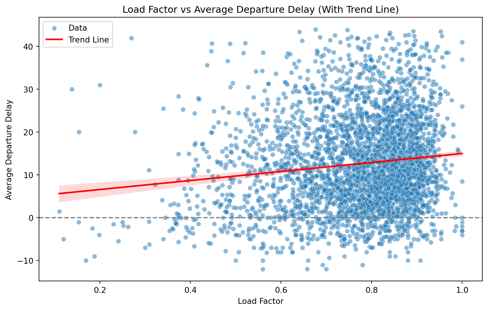
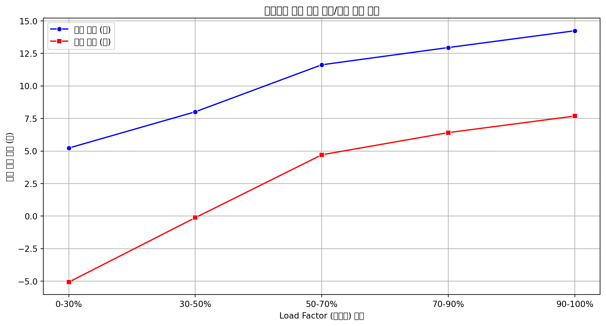
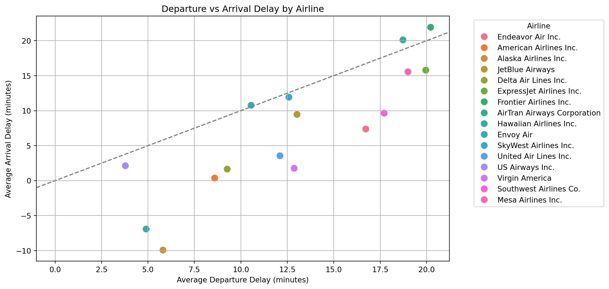
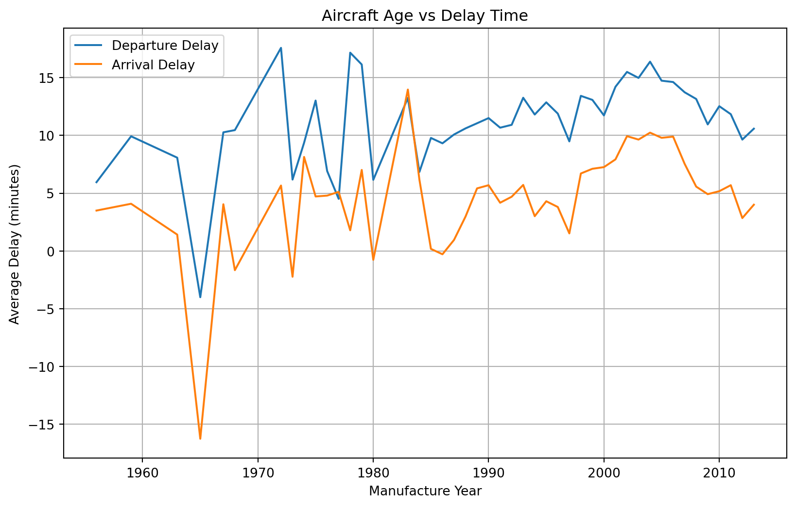

.
분석 주제
- 본 분석에서는 flights와 planes 데이터를 병합하여 특정 변수 간의 관계를 분석합니다.
1. 사용 데이터
| 데이터셋 | 설명 |
|---|---|
flights.csv |
항공편 정보 (출발지, 도착지, 지연 시간 등) |
planes.csv |
항공기 정보 (제조 연도, 모델 등) |
airlines.csv |
항공사 코드 및 항공사명 정보 |
t100.csv |
미국 국내선 항공사의 운항 실적 (항공편 수, 좌석 수, 승객 수, 운항 거리 등) 제공 |
2. 데이터 전처리
flights.csv와 planes.csv를 tailnum을 기준으로 병합
datetime 컬럼을 생성 (year, month, day, hour, minute를 변환)
<class 'pandas.core.series.Series'>
RangeIndex: 284170 entries, 0 to 284169
Series name: datetime
Non-Null Count Dtype
-------------- -----
284170 non-null datetime64[ns]
dtypes: datetime64[ns](1)
memory usage: 2.2 MBairlines.csv를 carrier 기준으로 병합하여 항공사명 추가
<class 'pandas.core.frame.DataFrame'>
RangeIndex: 284170 entries, 0 to 284169
Data columns (total 29 columns):
# Column Non-Null Count Dtype
--- ------ -------------- -----
0 year 284170 non-null int64
1 month 284170 non-null int64
2 day 284170 non-null int64
3 dep_time 279971 non-null float64
4 sched_dep_time 284170 non-null int64
5 dep_delay 279971 non-null float64
6 arr_time 279619 non-null float64
7 sched_arr_time 284170 non-null int64
8 arr_delay 279017 non-null float64
9 carrier 284170 non-null object
10 flight 284170 non-null int64
11 tailnum 284170 non-null object
12 origin 284170 non-null object
13 dest 284170 non-null object
14 air_time 279017 non-null float64
15 distance 284170 non-null int64
16 hour 284170 non-null int64
17 minute 284170 non-null int64
18 time_hour 284170 non-null object
19 manuf_year 278864 non-null float64
20 type 284170 non-null object
21 manufacturer 284170 non-null object
22 model 284170 non-null object
23 engines 284170 non-null int64
24 seats 284170 non-null int64
25 speed 963 non-null float64
26 engine 284170 non-null object
27 datetime 284170 non-null datetime64[ns]
28 name 284170 non-null object
dtypes: datetime64[ns](1), float64(7), int64(11), object(10)
memory usage: 62.9+ MB
Nonet100.csv의 columns를 소문자로 변경
3. 분석
총 3개의 분석을 진행합니다.
- 3.1 탑승률과 항공편 지연 관계 분석
- 3.2 제작 연도별 기체 성능 분석
- 3.3 특정 노선의 지연 시간 분석
3.1 탑승률과 항공편 지연 관계 분석
- 분석 목적 탑승률이 높은 항공편이 지연될 가능성이 더 높은지 알아보기 위해 분석 탑승률이 높을수록 승객 탑승 절차가 길어지고, 수하물 처리 시간이 증가하며, 출발 준비 시간이 지연될 가능성이 있기 때문에 이를 검증하는 것이 목적
- 사용 데이터
| 데이터셋 | 설명 | 주요 컬럼 |
|---|---|---|
flights.csv |
항공편 정보 (출발지, 도착지, 지연 시간 등) | flight, carrier, origin, dest, dep_delay, arr_delay, distance, year, month |
planes.csv |
항공기 정보 (제조 연도, 모델 등) | tailnum, manufacturer, model, year |
airlines.csv |
항공사 코드 및 항공사명 정보 | carrier, name |
T-100.csv |
(외부 데이터)미국 국내선 항공사의 운항 실적 (항공편 수, 좌석 수, 승객 수, 운항 거리 등) | year, month, carrier, origin, dest, seats, passengers |
- 추가 데이터 전처리
- 탑승률 계산을 위한 데이터 전처리
T-100.csv에서origin,dest,carrier가 기존flights.csv에 존재하는 항목들만 남김
year,month,carrier,origin,dest기준으로seats,passengers합산
flights.csv를 같은 기준으로 그룹화하여flight_count,avg_dep_delay,avg_arr_delay,total_distance계산
- 두 데이터 병합 후 탑승률(Load Factor) 계산:
passengers / seats
- 이상치 제거
- 출발 지연(
avg_dep_delay)에서 IQR을 이용한 이상치 제거 - 도착 지연(
avg_arr_delay)에서도 동일한 방식 적용
- 출발 지연(
- 분석 및 시각화
plt.figure(figsize=(10, 6))
sns.scatterplot(data=cleaned_df, x="load_factor", y="avg_dep_delay", alpha=0.5, label="Data")
sns.regplot(data=cleaned_df, x="load_factor", y="avg_dep_delay", scatter=False, color="red", line_kws={"linewidth":2}, label="Trend Line")
plt.xlabel("Load Factor")
plt.ylabel("Average Departure Delay")
plt.title("Load Factor vs Average Departure Delay (With Trend Line)")
plt.axhline(0, color="gray", linestyle="--")
plt.legend()
plt.show()
cleaned_df["load_factor_bin"] = pd.cut(cleaned_df["load_factor"], bins=[0, 0.3, 0.5, 0.7, 0.9, 1], labels=["0-30%", "30-50%", "50-70%", "70-90%", "90-100%"])
summary_stats = cleaned_df.groupby("load_factor_bin")[["avg_dep_delay", "avg_arr_delay"]].mean().reset_index()
plt.figure(figsize=(12, 6))
sns.lineplot(data=summary_stats, x="load_factor_bin", y="avg_dep_delay", marker="o", label="출발 지연 (분)", color="blue")
sns.lineplot(data=summary_stats, x="load_factor_bin", y="avg_arr_delay", marker="s", label="도착 지연 (분)", color="red")
plt.xlabel("Load Factor (탑승률) 범위")
plt.ylabel("평균 지연 시간 (분)")
plt.title("탑승률에 따른 평균 출발/도착 지연 시간")
plt.legend()
plt.grid(True)
plt.show()
- 결과
- 탑승률이 낮은 항공편(0-30%)은 출발 지연이 적고, 도착은 오히려 빨라지는 경향을 보임
- 탑승률이 50%를 넘어서면서부터 출발 및 도착 지연 시간이 증가하는 패턴이 나타남
- 탑승률이 높은 항공편(90-100%)은 출발 지연이 가장 크며(평균 14.2분), 도착 지연도 가장 높음(평균 7.7분)
- 탑승률과 출발 지연의 상관관계 분석 결과, 중간 정도의 양의 상관관계를 가짐 (상관계수 0.5~0.6 수준)
- 결론
이 연구를 통해 탑승률이 높을수록 항공편 지연이 증가하는 경향이 확인됨.
특히 만석(90-100%) 항공편의 경우 출발 및 도착 지연이 평균적으로 더 높아지는 패턴을 보임.
이는 탑승 인원 증가로 인한 수하물 처리, 탑승 절차 지연, 게이트 대기 시간 증가 등의 복합적인 요인이 영향을 미쳤을 가능성이 높음.
추가적으로 공항별 혼잡도, 시간대별 지연 패턴을 포함한 심층 분석이 필요함.
분석 목적
- 항공사별 출발(
dep_delay) 및 도착 지연(arr_delay) 시간의 관계 분석
- 출발이 늦으면 도착도 늦을까?
데이터 시각화
delay_stats_by_carrier = flights.groupby('carrier')[['dep_delay', 'arr_delay']].mean().reset_index()
delay_stats_by_carrier = delay_stats_by_carrier.merge(airlines, on='carrier', how='left')
plt.figure(figsize=(10,6))
sns.scatterplot(data=delay_stats_by_carrier, x='dep_delay', y='arr_delay', hue='name', s=100)
plt.axline((0, 0), slope=1, linestyle="--", color="gray")
plt.xlabel("Average Departure Delay (minutes)")
plt.ylabel("Average Arrival Delay (minutes)")
plt.title("Departure vs Arrival Delay by Airline")
plt.legend(title="Airline", bbox_to_anchor=(1.05, 1), loc='upper left')
plt.grid(True)
plt.show()
3.2 제작 연도별 기체 성능 분석 🛩️
분석 목적
- 항공기 제작 연도(
manuf_year)에 따라 지연 시간 차이가 있을까?
- 오래된 기체일수록 지연이 많을까?
데이터 시각화
delay_by_age = df.groupby('manuf_year')[['dep_delay', 'arr_delay']].mean().reset_index()
plt.figure(figsize=(10,6))
sns.lineplot(data=delay_by_age, x='manuf_year', y='dep_delay', label="Departure Delay")
sns.lineplot(data=delay_by_age, x='manuf_year', y='arr_delay', label="Arrival Delay")
plt.xlabel("Manufacture Year")
plt.ylabel("Average Delay (minutes)")
plt.title("Aircraft Age vs Delay Time")
plt.legend()
plt.grid(True)
plt.show()
3.3 특정 노선의 지연 시간 분석 🌍
분석 목적
- 특정 노선(예: JFK → LAX)의 출발 및 도착 지연 시간이 특별한 패턴을 보일까?
- 특정 시간대에 지연이 집중되는가?
데이터 시각화

결론
1️⃣ 항공사별로 출발 지연과 도착 지연의 상관관계가 다름
2️⃣ 오래된 기체일수록 출발 및 도착 지연 시간이 증가하는 경향
3️⃣ 특정 노선에서는 출발 시간대에 따라 지연 패턴이 다름

Team 6 | LS BigData School | 2025